Document préparé à partir des diapositives du cours, complété par quelques repères théoriques usuels de microbiologie de niveau AEC (signalés comme « complément »).
Comment utiliser ces notes — Elles suivent l’ordre du cours : on rappelle d’abord où se situent les mycètes dans l’arbre du vivant et ce qu’est une cellule eucaryote, puis on décrit les trois grands groupes (champignons, levures, moisissures), leurs caractéristiques communes, l’effet du pH et de la température, et enfin leurs rôles en alimentation (utiles et nuisibles) et l’exemple des antibiotiques. Les tableaux comparent systématiquement les mycètes aux bactéries (Cours 4).
Objectifs d’apprentissage proposés
- Situer les mycètes dans l’arbre du vivant (domaine des Eucaryotes) et distinguer une cellule procaryote d’une cellule eucaryote.
- Distinguer les trois groupes de mycètes — champignons, levures, moisissures — selon leur organisation (uni ou pluricellulaire) et leur aspect.
- Expliquer ce qu’est un organisme anaérobie facultatif et ce que sont les exoenzymes.
- Comparer la paroi d’une bactérie (peptidoglycane) et celle d’un mycète (chitine, β-glucanes, mannoprotéines).
- Comparer l’effet du pH et de la température sur la croissance des bactéries et des mycètes.
- Décrire les levures (bourgeonnement, fermentation) et distinguer une levure biologique d’une « levure » chimique.
- Décrire la structure d’une moisissure : hyphe, mycélium, hyphes végétatifs et aériens, hyphes cloisonnées et coenocytiques.
- Donner des exemples de rôles utiles et nuisibles des levures et moisissures en alimentation.
- Expliquer comment la pénicilline, produite par une moisissure, agit sur les bactéries.
PARTIE 1 — Rappel : où se situent les mycètes ?
1.1 La taxonomie : classifier le vivant
La taxonomie est la classification du vivant. Le système à trois domaines regroupe tous les êtres vivants en : Archées, Bactéries et Eucaryotes. Le domaine des Eucaryotes se divise lui-même en quatre grands groupes : protistes, plantes, animaux et champignons (les « Fonges », c’est-à-dire les mycètes).
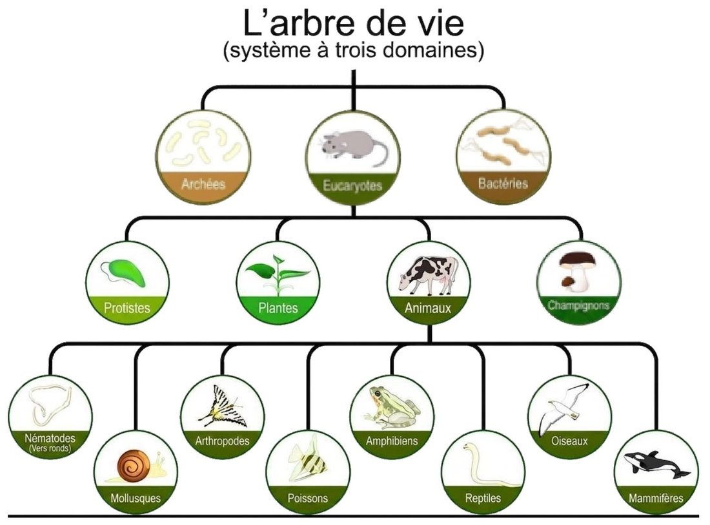
Arbre de vie à trois domaines
1.2 Cellule procaryote et cellule eucaryote

Cellule procaryote (exemple : bactérie) et cellule eucaryote
| Cellule procaryote | Cellule eucaryote | |
|---|---|---|
| Origine du mot | pro = « avant », karyon = « noyau » → « avant le noyau » | eu = « vrai », karyon = « noyau » → « elle a un vrai noyau » |
| Domaines associés | Bactéries et Archées | Fonges (mycètes), plantes, animaux, protistes |
| Organisation | Organismes unicellulaires autonomes exclusivement | Uni ou pluricellulaires (levures : unicellulaires; champignons et moisissures : pluricellulaires) |
| ADN | Pas de noyau : l’ADN est dans le nucléoïde (chromosome) | ADN (chromosomes) dans un noyau |
| Organites | Absents (ribosomes seulement) | Présents (mitochondrie, réticulum endoplasmique, appareil de Golgi, nucléole, etc.) |
| Taille | Petite : environ 1 µm à 5 µm | Plus grande : environ 10 µm à 100 µm |
À retenir : les mycètes sont des eucaryotes — leurs cellules ont un noyau et des organites, contrairement aux bactéries. Cette différence fondamentale explique pourquoi un antibiotique qui cible une structure bactérienne (comme la paroi de peptidoglycane) n’a aucun effet sur un mycète (voir Parties 3 et 8).
PARTIE 2 — Les mycètes : trois groupes
Les mycètes regroupent les champignons, les levures et les moisissures. Ils sont tous des mycètes.
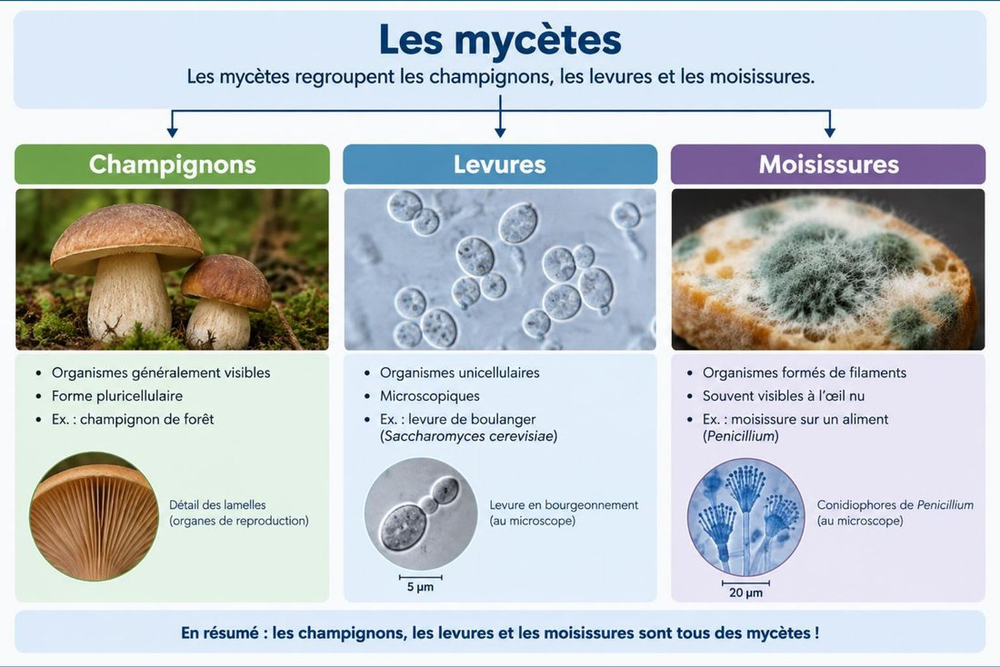
Les mycètes : champignons, levures et moisissures
| Champignons | Levures | Moisissures | |
|---|---|---|---|
| Organisation | Pluricellulaires | Unicellulaires | Pluricellulaires, formées de filaments (hyphes) |
| Taille / visibilité | Organismes généralement visibles | Microscopiques (échelle d’environ 5 µm sur le schéma) | Souvent visibles à l’œil nu (duvet coloré sur l’aliment); structures observables au microscope (échelle de 20 µm sur le schéma) |
| Exemple | Champignon de forêt (les lamelles sont des organes de reproduction) | Levure de boulangerie (Saccharomyces cerevisiae), observée en bourgeonnement | Moisissure sur un aliment (Penicillium), avec ses conidiophores |
Dans le reste du cours, on s’intéresse surtout aux levures et aux moisissures, qui sont les mycètes les plus importants en microbiologie alimentaire.
PARTIE 3 — Caractéristiques communes des eumycètes
« Eumycètes » désigne les « vrais » mycètes (les champignons au sens large : levures et moisissures incluses).
3.1 Métabolisme
- Moisissures : généralement aérobies (elles ont besoin d’oxygène).
- Levures : certaines sont anaérobies facultatives et peuvent fermenter en l’absence d’O₂.
Un organisme anaérobie facultatif : - n’a pas besoin d’O₂ pour produire de l’énergie; - peut utiliser l’O₂ lorsqu’il est disponible, généralement par respiration; - peut fonctionner sans O₂, par exemple par fermentation.
Les mycètes sont hétérotrophes : comme les bactéries, ils ne fabriquent pas leur propre matière organique et doivent absorber des nutriments déjà formés (voir Cours 2).
3.2 Les exoenzymes
- Exo = extérieur.
- Une enzyme est une molécule qui transforme d’autres molécules.
- Les exoenzymes sont donc des enzymes libérées à l’extérieur de la cellule pour digérer le milieu environnant : le mycète « prédigère » son aliment (pain, fruit, gélose) puis absorbe les petites molécules ainsi obtenues.
C’est ce qui explique que les moisissures se développent si bien sur et dans les aliments : elles sécrètent des enzymes qui décomposent l’aliment pour s’en nourrir (illustré par la moisissure Rhizopus stolonifera sur du pain, Partie 6).
3.3 La paroi : bactéries et mycètes ne sont pas pareils
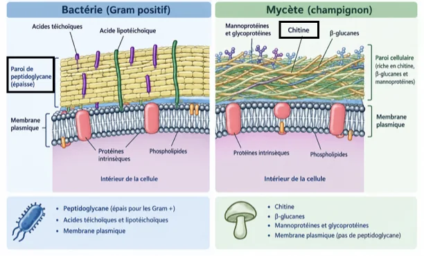
Paroi d’une bactérie Gram+ comparée à celle d’un mycète
| Bactérie (Gram +) | Mycète (champignon) | |
|---|---|---|
| Composition de la paroi | Peptidoglycane (épais chez les Gram +), acides téichoïques et lipotéichoïques | Chitine, β-glucanes, mannoprotéines et glycoprotéines |
| Membrane plasmique | Oui (phospholipides et protéines intrinsèques) | Oui (phospholipides et protéines intrinsèques) — pas de peptidoglycane |
Pourquoi c’est important : le peptidoglycane est une structure propre aux bactéries. Les mycètes ont une paroi d’une tout autre nature (chitine, glucanes). Un médicament qui attaque la paroi de peptidoglycane — la pénicilline — est donc efficace contre les bactéries, mais pas contre les mycètes (voir Partie 8).
PARTIE 4 — L’effet du pH et de la température
Ces deux facteurs extrinsèques (voir Cours 3) ne jouent pas de la même façon sur les bactéries et sur les mycètes. Les valeurs ci-dessous sont indicatives : la tolérance varie selon l’espèce.
4.1 Le pH
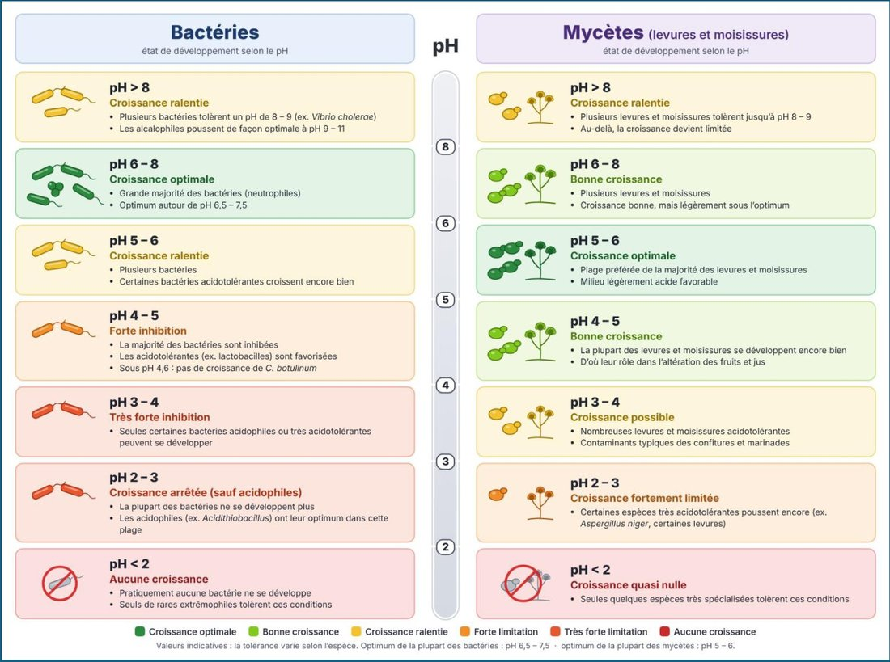
Croissance des bactéries et des mycètes selon le pH
| pH | Bactéries | Mycètes (levures et moisissures) |
|---|---|---|
| > 8 | Croissance ralentie — plusieurs bactéries tolèrent un pH de 8 à 9 (ex. Vibrio cholerae); les alcalophiles poussent de façon optimale à pH 9–11 | Croissance ralentie — plusieurs levures et moisissures tolèrent jusqu’à pH 8–9; au-delà, la croissance devient limitée |
| 6 – 8 | Croissance optimale — grande majorité des bactéries (neutrophiles); optimum autour de pH 6,5–7,5 | Bonne croissance — plusieurs levures et moisissures; légèrement sous l’optimum |
| 5 – 6 | Croissance ralentie — plusieurs bactéries; certaines acidotolérantes croissent encore bien | Croissance optimale — plage préférée de la majorité des levures et moisissures |
| 4 – 5 | Forte inhibition — la majorité des bactéries sont inhibées; les acidotolérantes (ex. lactobacilles) sont favorisées; sous pH 4,6 : pas de croissance de C. botulinum | Bonne croissance — la plupart des levures et moisissures se développent encore bien (d’où leur rôle dans l’altération des fruits et des jus) |
| 3 – 4 | Très forte inhibition — seules certaines bactéries acidophiles ou très acidotolérantes peuvent se développer | Croissance possible — nombreuses levures et moisissures acidotolérantes (contaminants typiques des confitures et des marinades) |
| 2 – 3 | Croissance arrêtée (sauf acidophiles) — la plupart ne se développent plus; les acidophiles (ex. Acidithiobacillus) ont leur optimum dans cette plage | Croissance fortement limitée — certaines espèces très acidotolérantes poussent encore (ex. Aspergillus niger, certaines levures) |
| < 2 | Aucune croissance — pratiquement aucune bactérie; seuls de rares extrêmophiles tolèrent ces conditions | Croissance quasi nulle — seules quelques espèces très spécialisées |
À retenir : l’optimum de la plupart des bactéries se situe près de la neutralité (pH 6,5 à 7,5), alors que celui de la plupart des mycètes est légèrement acide (pH 5 à 6). Dans un aliment acide (fruits, jus, confitures, marinades), ce sont donc les mycètes — et non les bactéries — qui prennent le dessus.
4.2 La température
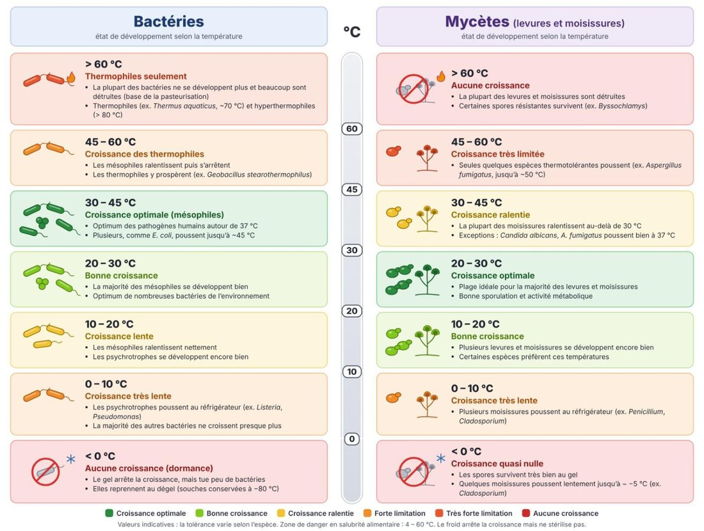
Croissance des bactéries et des mycètes selon la température
| Température | Bactéries | Mycètes (levures et moisissures) |
|---|---|---|
| > 60 °C | Thermophiles seulement — la plupart des bactéries ne se développent plus et beaucoup sont détruites (base de la pasteurisation); thermophiles (ex. Thermus aquaticus, ~70 °C) et hyperthermophiles (> 80 °C) | Aucune croissance — la plupart des levures et moisissures sont détruites; certaines spores résistantes survivent (ex. Byssochlamys) |
| 45 – 60 °C | Croissance des thermophiles — les mésophiles ralentissent puis s’arrêtent; les thermophiles prospèrent (ex. Geobacillus stearothermophilus) | Croissance très limitée — seules quelques espèces thermotolérantes poussent (ex. Aspergillus fumigatus, jusqu’à ~50 °C) |
| 30 – 45 °C | Croissance optimale (mésophiles) — optimum des pathogènes humains autour de 37 °C; plusieurs, comme E. coli, poussent jusqu’à ~45 °C | Croissance ralentie — la plupart des moisissures ralentissent au-delà de 30 °C; exceptions : Candida albicans et A. fumigatus poussent bien à 37 °C |
| 20 – 30 °C | Bonne croissance — la majorité des mésophiles se développent bien; optimum de nombreuses bactéries de l’environnement | Croissance optimale — plage idéale pour la majorité des levures et moisissures; bonne sporulation et activité métabolique |
| 10 – 20 °C | Croissance lente — les mésophiles ralentissent nettement; les psychrotrophes se développent encore bien | Bonne croissance — plusieurs levures et moisissures se développent encore bien; certaines espèces préfèrent ces températures |
| 0 – 10 °C | Croissance très lente — les psychrotrophes poussent au réfrigérateur (ex. Listeria, Pseudomonas); la majorité des autres bactéries ne croissent presque plus | Croissance très lente — plusieurs moisissures poussent au réfrigérateur (ex. Penicillium, Cladosporium) |
| < 0 °C | Aucune croissance (dormance) — le gel arrête la croissance mais tue peu de bactéries; elles reprennent au dégel (souches conservées à −80 °C) | Croissance quasi nulle — les spores survivent bien au gel; quelques moisissures poussent lentement jusqu’à ~−5 °C (ex. Cladosporium) |
À retenir : les bactéries pathogènes préfèrent la chaleur du corps (30–45 °C, optimum vers 37 °C), tandis que les mycètes préfèrent des températures plus fraîches (20–30 °C) et plusieurs moisissures tolèrent le réfrigérateur. La zone de danger en salubrité alimentaire (4 à 60 °C) demeure la référence : le froid arrête ou ralentit la croissance, mais il ne stérilise pas.
PARTIE 5 — Les levures
5.1 Caractéristiques générales
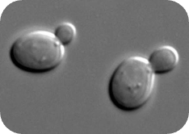
Levures en bourgeonnement (microscope)
- Unicellulaires.
- Formes ronde à ovale.
- Croissance en 24 à 72 heures.
- Colonies blanches / crémeuses.
- Anaérobies facultatives : elles aiment le glucose et sont bonnes à faire la fermentation.
- Reproduction asexuée par bourgeonnement : une petite cellule fille (le bourgeon) se forme sur la cellule mère, puis s’en détache (visible sur la micrographie).
5.2 L’exemple type : Saccharomyces cerevisiae (levure de boulangerie / de bière)
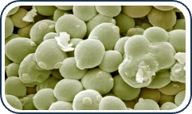
Saccharomyces cerevisiae (microscopie électronique)
- Reproduction : principalement par bourgeonnement.
- Nutrition : hétérotrophe.
- Métabolisme : respiration cellulaire en présence d’oxygène; fermentation alcoolique en son absence.
- Fermentation : transforme notamment le glucose en éthanol et en dioxyde de carbone (CO₂).
- Température : se développe généralement bien autour de 25 à 30 °C, selon les conditions.
- pH : préfère généralement un milieu légèrement acide.
- Habitat : présente notamment sur les fruits et dans les milieux riches en sucres.
Complément — équation de la fermentation alcoolique : glucose (C₆H₁₂O₆) → 2 éthanol (C₂H₅OH) + 2 CO₂ (+ un peu d’énergie).
Cette double production explique les deux grandes utilisations de la levure : le CO₂ fait lever la pâte (pain), l’éthanol donne la bière et le vin.
5.3 La « levure » chimique : attention à la confusion
- Le bicarbonate de soude (poudre à pâte / baking powder, formule NaHCO₃) est non vivant.
- Ce n’est pas une levure biologique.
- Le CO₂ qu’il libère n’est pas issu de la respiration, mais d’une réaction chimique :
NaHCO₃ + HCl → NaCl + H₂O + CO₂
| Levure biologique | Levure chimique | |
|---|---|---|
| Nature | Vivante (mycète unicellulaire) | Non vivante (bicarbonate de soude, NaHCO₃) |
| Origine du CO₂ | Fermentation (métabolisme de la cellule) | Réaction chimique avec un acide |
PARTIE 6 — Les moisissures
6.1 Structure : hyphes et mycélium
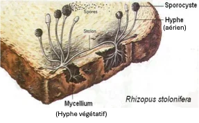
Moisissure Rhizopus stolonifera sur du pain
- Les moisissures sont pluricellulaires (= multicellulaires).
- Leur cellule a la forme d’un filament : l’hyphe.
- Le mycélium est l’ensemble des hyphes d’un même individu.
- Les hyphes végétatifs (du substrat) assurent la nutrition, la digestion et l’ancrage.
- Les hyphes aériens assurent la reproduction et la dispersion.
Sur le schéma de Rhizopus stolonifera (moisissure du pain) : le mycélium (hyphes végétatifs) s’enfonce dans le pain, un stolon relie les zones de la colonie, et les hyphes aériens portent des sporocystes qui libèrent des spores.
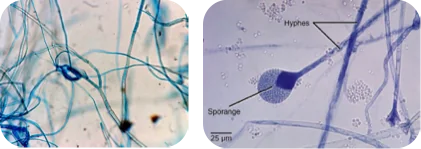
Hyphes de moisissures au microscope (hyphes et sporange)
6.2 Deux types d’hyphes selon la présence de cloisons
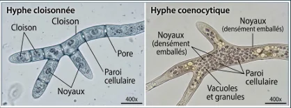
Hyphe cloisonnée et hyphe coenocytique
| Hyphe cloisonnée (septée) | Hyphe coenocytique (siphonée) | |
|---|---|---|
| Cloisons | Présence de cloisons (septa) qui divisent l’hyphe en compartiments | Aucune cloison : un long tube continu |
| Noyaux | Un ou quelques noyaux par compartiment | Nombreux noyaux densément emballés dans un même cytoplasme |
| Autres structures | Pores dans les cloisons (le cytoplasme circule d’un compartiment à l’autre), paroi cellulaire | Paroi cellulaire, vacuoles et granules |
6.3 Hyphes végétatifs et hyphes aériens : deux fonctions
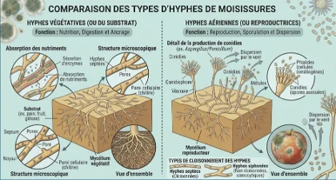
Comparaison des types d’hyphes de moisissures
| Hyphes végétatifs (du substrat) | Hyphes aériens (reproducteurs) | |
|---|---|---|
| Fonction | Nutrition, digestion et ancrage | Reproduction, sporulation et dispersion |
| Où ? | Dans le substrat (pain, fruit, gélose) | Au-dessus du substrat, dans l’air |
| Ce qu’ils font | Sécrètent des enzymes (exoenzymes) et absorbent les nutriments | Produisent des conidies (spores asexuées) portées par des conidiophores; dispersées par le vent |
| Structure | Paroi cellulaire (chitine), cloisons et pores | Chez Aspergillus / Penicillium : conidiophore, vésicule, métules, phialides (cellules conidiogènes), conidies |
À retenir : c’est la partie aérienne qui donne à la moisissure son aspect de duvet coloré — ce sont les spores — alors que la partie végétative, cachée dans l’aliment, est celle qui le digère. Voir une moisissure à la surface d’un aliment, c’est donc voir seulement une partie de l’organisme : le mycélium peut déjà s’être étendu dans tout l’aliment.
PARTIE 7 — Levures et moisissures : rôles en alimentation
7.1 Rôles utiles
| Espèce | Type | Utilité alimentaire / industrielle |
|---|---|---|
| Aspergillus niger | Moisissure | Production d’acide citrique, utilisé comme agent de conservation / acidifiant |
| Saccharomyces cerevisiae | Levure | Fermentation du pain (production de CO₂) et du vin / bière (production d’éthanol); aussi utilisée en génie génétique pour produire des protéines recombinantes et des vaccins |
| Penicillium chrysogenum (P. rubens) | Moisissure | Production de pénicilline (antibiotique) — inhibe la synthèse de la paroi bactérienne (peptidoglycane), entraînant la lyse des bactéries (découverte par Fleming, 1928; P. notatum); inhibe Staphylococcus |
| Trichoderma reesei | Moisissure | Production de cellulase, utilisée pour l’extraction des jus de fruits |
| Beauveria bassiana | Moisissure | Lutte biologique contre les insectes nuisibles (agent entomopathogène) : bio-insecticide |
| Candida oleophila | Levure | Agent de biocontrôle : empêche la croissance d’autres mycètes (indésirables) sur les fruits entreposés |
7.2 Rôles nuisibles
| Espèce | Type | Effets et conséquences nuisibles |
|---|---|---|
| Aspergillus flavus | Moisissure | Production d’aflatoxines (hautement toxiques / cancérigènes); contamination des cultures (arachides, maïs, etc.); risque majeur de cancer du foie chez l’humain et l’animal; pertes économiques agricoles importantes |
| Penicillium expansum | Moisissure | Production de patuline (mycotoxine); contamination des fruits (pommes, poires) et des jus de fruits; problèmes gastro-intestinaux et hépatiques chez le consommateur; contrôles stricts nécessaires dans l’industrie des jus |
| Candida albicans | Levure | Agent d’infections (candidose) : infections superficielles (bouche, peau, parties génitales — « muguet »); infections systémiques graves (candidémies) chez les immunodéprimés; problème de santé publique et nosocomial |
| Claviceps purpurea | (Moisissure, selon le tableau du cours) | Ergotisme (« feu de Saint-Antoine ») : contamination des céréales (seigle, blé) pendant la croissance; production d’ergotamine; symptômes de gangrène (par restriction sanguine) et convulsions (effets neurologiques); consommation de pain contaminé : empoisonnement grave et historique |
| Microsporum / Trichophyton spp. | (Moisissure, selon le tableau du cours) | Dermatophytose (teignes) : infections fongiques superficielles de la peau, des cheveux et des ongles (kératine); roue de Sainte-Catherine, pied d’athlète, onychomycose; très contagieux par contact direct ou indirect |
| Stachybotrys chartarum | Moisissure | Syndrome du bâtiment malsain : croissance dans les bâtiments humides (murs, conduits d’air); allergies, irritations respiratoires, fatigue et maux de tête; inhalation de spores et de mycotoxines : risques pour la santé |
Complément (repère théorique, absent des diapositives) : une mycotoxine est une toxine produite par un mycète. Elle peut rester dans l’aliment même après la destruction de la moisissure — c’est pourquoi, en salubrité, on ne se contente pas de « gratter » la moisissure d’un aliment contaminé.
PARTIE 8 — Les antibiotiques : l’exemple de la pénicilline
8.1 La découverte
En 1928, Alexander Fleming observe que la moisissure Penicillium notatum (aujourd’hui P. rubens / P. chrysogenum) empêche la croissance de bactéries (Staphylococcus) sur une gélose. Autour de la colonie de moisissure, on voit une zone d’inhibition de la croissance : une région où les bactéries ne poussent pas.
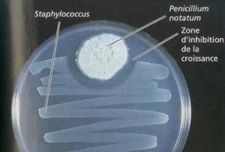
Zone d’inhibition autour de Penicillium notatum
(Le cours comprend ici une vidéo sur l’histoire de la découverte de la pénicilline.)
8.2 Comment la pénicilline agit sur les bactéries (Gram positives)
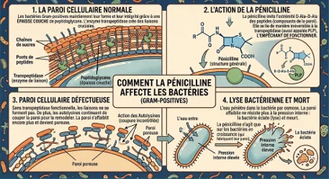
Comment la pénicilline affecte les bactéries Gram positives
- Paroi cellulaire normale — Les bactéries Gram positives maintiennent leur forme et leur intégrité grâce à une épaisse couche de peptidoglycane (chaînes de sucres reliées par des ponts de peptides). L’enzyme transpeptidase crée les liaisons (ponts) cruciales entre les chaînes.
- Action de la pénicilline — La pénicilline imite l’extrémité D-Ala-D-Ala des peptides qui composent la paroi. Elle se lie de manière irréversible à la transpeptidase (aussi appelée PLP, protéine liant la pénicilline) et l’empêche de fonctionner.
- Paroi cellulaire défectueuse — Sans transpeptidase fonctionnelle, les liaisons ne se forment pas. De plus, les autolysines continuent de couper la paroi pour la remodeler : la paroi s’affaiblit encore plus et devient poreuse.
- Lyse bactérienne et mort — L’eau pénètre dans la bactérie par osmose. La paroi affaiblie ne résiste plus à la pression interne élevée : la bactérie éclate (lyse) et meurt.
À retenir : la pénicilline n’agit que sur les bactéries en croissance (celles qui fabriquent leur paroi). Elle est inefficace contre les mycètes et les virus, qui n’ont pas de paroi de peptidoglycane. Notez que c’est un mycète (la moisissure Penicillium) qui fabrique cette substance qui tue des bactéries.
Tableau de synthèse : bactéries et mycètes
| Bactéries | Mycètes (levures et moisissures) | |
|---|---|---|
| Type de cellule | Procaryote (pas de noyau; ADN dans le nucléoïde) | Eucaryote (noyau, organites) |
| Taille approximative | 1 à 5 µm | 10 à 100 µm (voir note sur les diapositives, plus bas) |
| Organisation | Unicellulaire | Levures : unicellulaires; moisissures et champignons : pluricellulaires (hyphes, mycélium) |
| Paroi | Peptidoglycane | Chitine, β-glucanes, mannoprotéines |
| Nutrition | Hétérotrophes | Hétérotrophes (exoenzymes : digestion à l’extérieur) |
| Oxygène | Aérobies, anaérobies ou facultatives | Moisissures : généralement aérobies; levures : souvent anaérobies facultatives |
| Reproduction | Fission binaire (+ conjugaison) | Levures : bourgeonnement; moisissures : spores (conidies, sporocystes) |
| pH optimal | Près de la neutralité (6,5–7,5) | Légèrement acide (5–6) |
| Température optimale | Mésophiles : 30–45 °C (pathogènes : ~37 °C) | 20–30 °C (plusieurs moisissures tolèrent le froid) |
| Effet de la pénicilline | Sensibles (bactéries en croissance) | Insensibles |
Vocabulaire clé
Mycètes, eumycètes, champignon, levure, moisissure, procaryote, eucaryote, noyau, organite, hyphe, mycélium, hyphe végétatif, hyphe aérien, hyphe cloisonné (septé), hyphe coenocytique (siphoné), cloison (septum), spore, conidie, conidiophore, sporocyste (sporange), bourgeonnement, anaérobie facultatif, respiration, fermentation, exoenzyme, enzyme, chitine, β-glucanes, peptidoglycane, acidotolérant, acidophile, psychrotrophe, mésophile, thermophile, mycotoxine, aflatoxine, patuline, candidose, ergotisme, dermatophytose, biocontrôle, antibiotique, pénicilline, zone d’inhibition, transpeptidase, lyse.
Fin des notes de cours — Cours 5.